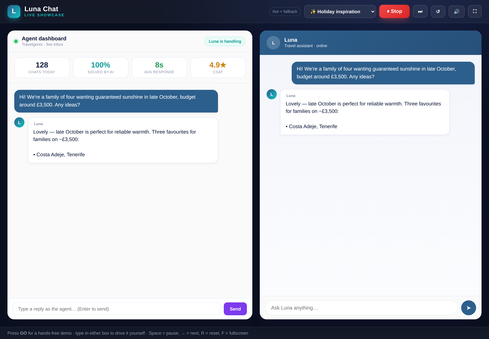
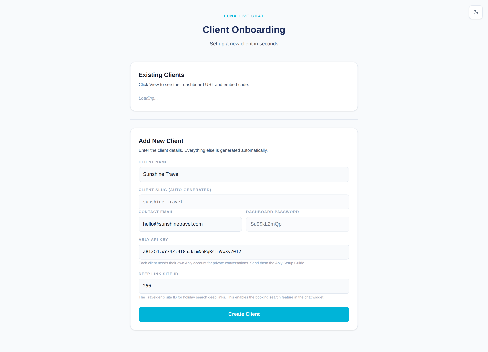
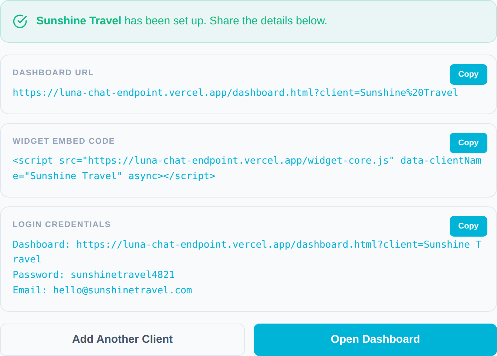
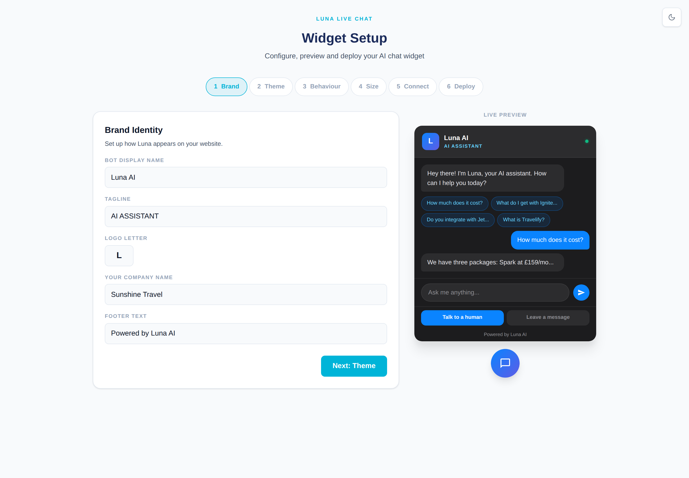
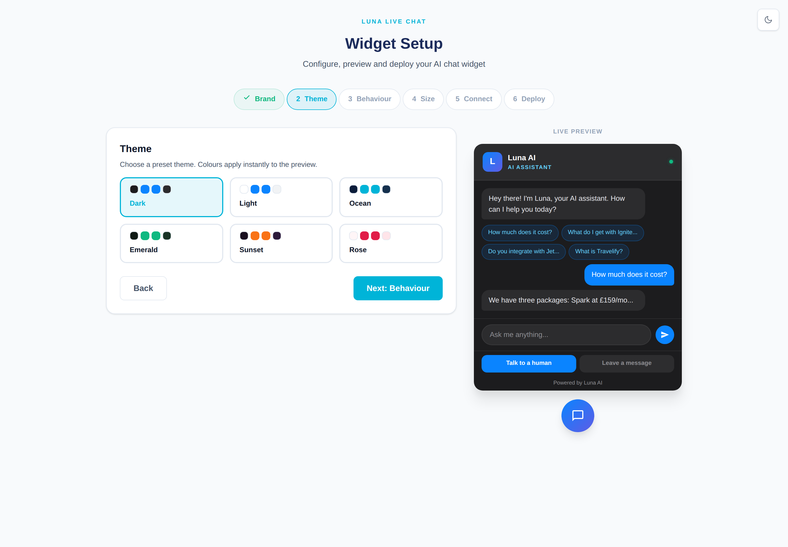
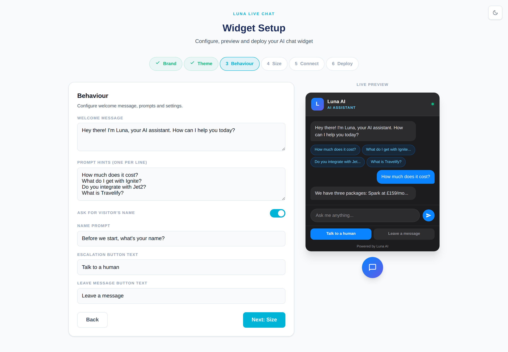
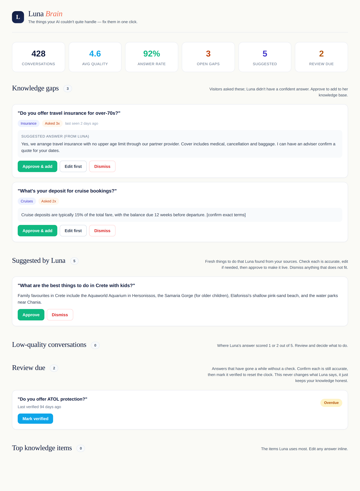
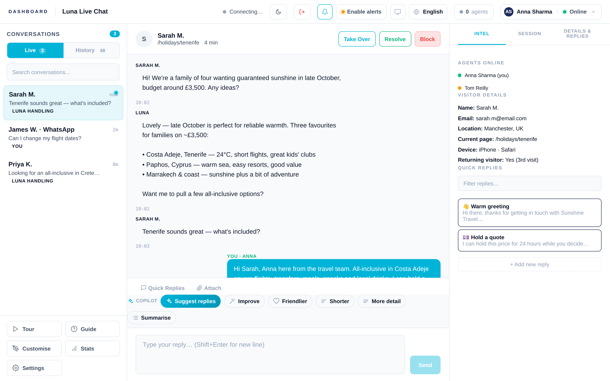

How to set a client up on Luna and get them live — in plain English, step by step. No technical know‑how needed.
For Travelgenix account managers
Create · hand over · install · go live
Six simple steps
What's inside
Welcome — your part in thisWhat you'll do, and what's already done for you
Before you start — what to collectThree or four details from the client
Step 1 — Create the clientFill in one short form
Step 2 — Send the welcome packHand over the login and the website code
Step 3 — Get Luna onto their websiteOne line of code, pasted once
Step 4 — Make Luna look and sound rightBrand, colours, welcome message
Step 5 — Give Luna some starter knowledgeSo she answers well from day one
Step 6 — Try it out togetherA quick test before going live
Your go‑live checklistEverything to tick off
If something doesn't look rightQuick, friendly fixes
1Welcome — your part in this
Setting a client up on Luna is quick and there's nothing technical to it. Your job is simply to create the client, hand them their login and website code, help them switch it on, and check it's working. This guide walks you through it one step at a time.
How Luna works, in a nutshell
A visitor opens the chat bubble on the client's website and chats to Luna, the AI assistant. Luna answers travel questions instantly, day and night. When a question needs a real person, the chat hands over to the client's team in their dashboard — the same place they'll also see any WhatsApp messages.

THE BIG PICTURE The visitor chats with Luna on the right; the client's team sees everything live on the left and can step in whenever they like.
Good news — most of it is already done for you. You don't set up any of the clever bits. The AI brain, the security, photo and document sharing, WhatsApp, translation and behind‑the‑scenes monitoring are all built in and switched on for every client. You only ever do the four simple things below.
Create the client — one short form (Step 1).
Hand over their welcome pack — login and website code (Steps 2–3).
Help it look and sound right — branding and a little starter knowledge (Steps 4–5).
Check it works — a quick test, then go live (Step 6).
Tip. Keep this guide and the Luna Chat User Guide side by side. This one gets the client set up; the User Guide shows them how to use Luna every day — share it with them once they're live.
2Before you start — what to collect
Gather a few details from the client first and the whole set‑up takes about five minutes. Here's your shopping list.
The client's company name — exactly how they want it to appear (e.g. Sunshine Travel).
A contact email — where you'll send their welcome pack and where chat enquiries can land.
Their live‑chat connection key — a short code that links the chat to the client's own private line, so their conversations stay theirs alone. The client creates this in a free account (it takes a couple of minutes) and sends it to you. Not sure how? See the tip below.
Their booking‑search number(optional) — the client's Travelgenix site number. It switches on the handy "search holidays" feature inside the chat. You can always add this later.
Tip — about the connection key. Think of it like a private phone line for the client's chat. If the client hasn't got one yet, send them our short "Getting your connection key" one‑pager, or ask the Travelgenix tech team to sort one for them. You can't finish Step 1 without it, so line this up first.
Tip. Double‑check the spelling of the company name with the client now. It's used in a few places behind the scenes, so getting it right first time saves a tidy‑up later.
You won't need: any passwords, servers, software to install, or anything to pay for. Luna creates the client's password for you automatically, and everything runs in the cloud.
3Step 1 — Create the client
Open the Client Onboarding page, enter the team password when asked, and you'll see the form below. This is where you turn those few details into a ready‑to‑go Luna account.

CREATE A CLIENT The Add New Client form. Fill in the boxes — Luna sorts out everything else automatically.
Filling in the form
Client Name — type the client's company name exactly as they want it shown.
Client Slug — this fills in by itself. Just leave it.
Contact Email — the client's contact address.
Dashboard Password — created for you automatically. No need to think one up.
Connection Key (shown as "Ably API Key") — paste the live‑chat connection key the client gave you.
Booking‑search number (shown as "Deep Link Site ID") — pop in the client's Travelgenix site number if you have it, or leave it blank for now.
Press Create Client.
Tip. Everything marked "auto‑generated" looks after itself — the slug and the password both fill in for you. The only things you really type are the name, the email and the connection key.
Heads up. You can't create the client without the connection key, so make sure you've got it from them before you start (see Step 2 of the previous page).
Already got the client in the list? The Existing Clients list at the top lets you press View to pull up their welcome details again any time — handy if they lose their login.
4Step 2 — Send the welcome pack
The moment you press Create Client, Luna shows you the client's welcome pack — three ready‑to‑copy boxes. This is everything the client needs to get going.

WELCOME PACK Three boxes, each with a Copy button. Send these to the client.
Box
What it is & what to do with it
Dashboard URL
The web address where the client's team logs in to answer chats. Send it to them and suggest they bookmark it.
Widget Embed Code
The little piece of code that puts the chat bubble on their website. They (or their web person) paste it in once — see Step 3.
Login Credentials
The client's dashboard address, password and email in one place. This is what they sign in with.
Press Copy on each box in turn.
Paste them into an email (or your handover document) for the client.
Use Open Dashboard if you'd like to take a quick look yourself, or Add Another Client to set up the next one.
Please share this securely. The login details are like a key to the client's chat. Send them in a private email straight to your contact — never in a public message, shared ticket or group chat.
Tip. Pop the Luna Chat User Guide in the same email. That way the client gets their login and the friendly how‑to‑use guide in one go.
5Step 3 — Get Luna onto their website
For the chat bubble to appear, the Widget Embed Code from the welcome pack needs to go onto the client's website. It's a one‑off, takes a minute, and you don't need to understand the code itself.
The simplest way
Send the client the Widget Embed Code you copied in Step 2.
Ask them to give it to whoever looks after their website (or do it yourself if you have access).
It's pasted in once, at the bottom of the website's pages. The guide below covers the most common website builders.
If their website is built with…
Where it goes
Duda
Settings › Head & Body Scripts › Body End
WordPress
A "Header & Footer Scripts" plugin (or the theme footer)
Shopify
Online Store › Themes › Edit code › before the closing body tag
Wix
Settings › Custom Code › Body End
Any other site
Their web person pastes it just before the closing body tag
Tip. Not sure who manages the client's site? Just ask "who looks after your website?" and forward them the code with a one‑line note: "Please pop this just before the closing </body> tag — it adds our live chat." That's all they need.
Tip. Once it's in, open the client's website in a new tab and look for the chat bubble in the corner. Send it a quick "hello" to see Luna reply — that's your proof it's live.
6Step 4 — Make Luna look and sound right
Now make Luna feel like part of the client's brand. The Widget Setup page does this with a simple, click‑through wizard and a live preview that updates as you go — no design skills needed.

LOOK & FEEL Type on the left, watch the chat update on the right. Move through with the Next button.
What you can set
Brand — the assistant's name, a small tagline, the logo letter and the client's company name.
Theme — pick a colour style that matches their website (Ocean and Light suit most travel sites).
Behaviour — the welcome message, a few suggested questions, and the wording of the "Talk to a human" button.
Size — how big the chat window is (Standard is right for nearly everyone).

Pick a colour theme

Set the welcome & prompts
Tip. Write the suggested questions as the things the client's customers really ask — like "Best Greek islands for families?" or "All‑inclusive under £800?". They double as a friendly menu and get conversations going.
Tip. Keep an eye on the live preview as you type — what you see is exactly what visitors will see. The full detail of every option is in the Luna Chat User Guide if the client wants to fine‑tune later.
7Step 5 — Give Luna some starter knowledge
Luna already knows a huge amount about destinations and travel. To make her brilliant for this client, give her a little of their own information too — their prices, opening hours, booking terms and anything special they offer. This all happens in Luna Brain.

LUNA BRAIN Where the client keeps Luna accurate. Most updates are a single click — approve a good answer, or tidy one up first.
A simple starter routine
Jot down the ten questions the client's customers ask most.
Make sure Luna has a clear, correct answer for each — add or tidy them in Luna Brain.
Glance at Knowledge gaps — these are real questions Luna couldn't answer. Approve a good suggested answer, or use Edit first to correct it.
Tip. Where a price or policy is involved, always read the suggested answer and use Edit first to put in the client's exact wording. Better a precise answer than a roughly‑right one.
This is mostly the client's job long‑term. You just help them get started. The Luna Chat User Guide shows them how to keep Luna sharp week to week — it really is mostly one‑click.
8Step 6 — Try it out together
Before you call it live, run one quick test with the client watching. It takes two minutes and gives everyone confidence.

THE DASHBOARD Where the client's team answers. Note the Take Over, Resolve and quick‑reply tools.
The two‑minute test
On the client's website, open the chat and ask a real question. Watch Luna answer.
Tap Talk to a human in the chat.
In the dashboard, the chat should pop up waiting for a person. Press Take Over, type a reply and send it.
Check the reply appears back in the chat on the website. Then press Resolve to close it.
Tip. Do this with two screens (or two people) — one on the website as the "customer", one watching the dashboard. Seeing a message travel from the website to the dashboard and back is the best possible reassurance for a nervous client.
Tip. Show the client the Take Over button while you're here. Knowing they can always step in is usually the thing that wins them over.
9Your go‑live checklist
Run through this with the client and you're ready to switch on with confidence.
Client created — you filled in the form and got the welcome pack.
Welcome pack sent — login details and website code emailed securely to the client.
Chat bubble live — the code is on their website and the bubble appears.
Looks on‑brand — name, colours, welcome message and suggested questions all set.
Starter knowledge added — Luna has good answers to their top questions.
Test passed — you ran the two‑minute test: Luna answered, you took over, the reply came through.
Client knows the basics — they can log in, set themselves "online", take over a chat and resolve it.
User Guide shared — the client has the Luna Chat User Guide for day‑to‑day use.
Tip. For the first week, check in with the client and glance at their Knowledge gaps together. Clearing a few early on makes Luna noticeably sharper and shows the client the value straight away.
10If something doesn't look right
Most hiccups have a simple cause. Here are the usual ones and the quick fix — and when in doubt, the Travelgenix tech team is one message away.
What you're seeing
What to do
The chat bubble isn't on the website
Check the website code was pasted in (and the page saved/published). Ask the client's web person to confirm it's there, just before the closing body tag.
The client can't log in
Check they're using the exact details from the welcome pack, and that the company name matches what you typed. Re‑open their details from the Existing Clients list to double‑check.
Luna's answers aren't quite right
Add or tidy the answer in Luna Brain (Step 5). A minute there usually fixes it for good.
A test chat didn't reach the dashboard
Make sure the connection key from Step 1 was the client's own. If you're unsure it's correct, ask the tech team to check it.
The client wants WhatsApp in their inbox
Great news — it's already built. Just send the client's WhatsApp number to the tech team and they'll connect it.
Sharing photos or documents isn't working
This is switched on for everyone, so it shouldn't fail — if it does, flag it to the tech team and they'll take a look.
Anything else
Don't wrestle with it — drop the Travelgenix tech team a note with the client's name and what you're seeing.
That's it — you're ready to set clients live. Luna Chat · Travelgenix Questions? The Travelgenix team is always happy to help.